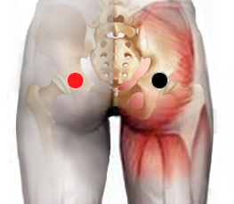

Parásitos intestinales
Pares
gluteo - gluteo
interiliaco - riñón

Generalidades:
La Tenia y Ascaris son los parásitos de gran tamaño con mayor frecuencia responsables de infecciones en el tubo digestivo.
Taenia saginata (tenia bovina), Taenia solium (tenia porcina) y Taenia asiatica (tenia asiática), son los principales patógenos en humanos. Las personas se pueden infectar con estos parásitos al comer carne de res (T. saginata) o de cerdo (T. solium y T. asiatica) que esté cruda o mal cocida. Las personas con teniasis puede que no sepan que tienen la infección parasitaria porque por lo general no se presentan síntomas o son leves.
Las tenias o solitarias, causan dos tipos deenfermedades parasitarias, según sean producidas por su fase adulta o por su fase larvaria. Se llama teniasis a la que ocurre por la presencia de sus formas adultas, cuando se alojan en el intestino del huésped definitivo, y cisticercosis o cenurosis a la producida por sus formas larvales, intermedias o juveniles, al afectar a los hospedadores intermediarios en sus tejidos u órganos internos.
La Ascaris es un nematodo, se asemeja mucho a un gusano de tierra, puede llegar a medir entre 20 - 30 cms. La hembra adulta puede producir miles de larvas en un día, las cuales se pueden desarrollar en unas cuantas semanas en condiciones propicias o pueden permanecer latentes por años. Pueden alojarse en diversos órganos, pero solo se desarrollan en el tubo digestivo.
Transmisión:
Transmisión fecal-oral, agua o alimentos contaminados con heces fecales.